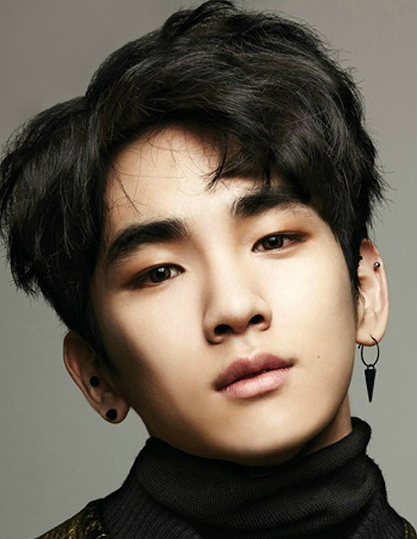

JONGHYUN

Kim Jong-hyun (April 8, 1990 – December 18, 2017)better known mononymously as Jonghyun, was a South Korean singer-songwriter, record producer, radio host, and author under the SM Entertainment label. He was the main vocalist of the South Korean boy band Shinee for nine years, releasing twelve albums with the group in both Korean and Japanese. He also participated in SM Entertainment's project group, SM the Ballad, for the release of two EP albums.
KEY
Kim Ki-bum (born September 23, 1991), better known by his stage name Key, is a South Korean singer, actor, fashion designer and television presenter. Born and raised in Daegu, South Korea, he later travelled to Seoul after a successful audition at the S.M. National Tour Audition Casting. In May 2008, Key debuted as a member of South Korean boy group Shinee, who later went on to become one of the best-selling artists in South Korea. Key is widely recognised as a singer, but he has also ventured into different careers, notably as an actor and fashion designer.
MINHO
Choi Min-ho (born December 9, 1991), better known by the mononym Minho, is a South Korean rapper, singer, actor, songwriter and model. He debuted as a member of South Korean boy group Shinee in May 2008 who later went on to become one of the best-selling artists in Korea. Aside from group activities as singer, he has debuted as an actor in November 2010 in a KBS2's drama special, entitled Pianist. He has since had roles in various television dramas such as SBS' sitcom, Salamander Guru and The Shadows (2012), To the Beautiful You (2012), Medical Top Team (2013), My First Time (2015) and Hwarang: The Poet Warrior Youth (2016). He made his feature film debut in 2016 with Canola.
ONEW
Lee Jin-ki (Born December 14, 1989), better known by his stage name Onew is a South Korean singer and actor. Born in Gwangmyeong, Gyeonggi-do, Onew was discovered at the 2006 SM Academy Casting and signed the contract with SM Entertainment the day after his audition. He debuted as one of the lead vocalists and leader of boy group Shinee in May 2008,[2] who went on to become one of the best-selling artists in South Korea.
TAEMIN
Lee Tae-min (born July 18, 1993), better known by the mononym Taemin, is a South Korean singer-songwriter, actor and dancer. He debuted at age 14 as a member of the group Shinee in May 2008, and his success and artistic impact has led him to being called the "Idol's Idol".He began his acting career in 2009 with MBC's comedy Tae-Hee, Hye-Kyo, Ji-Hyun as Junsu.